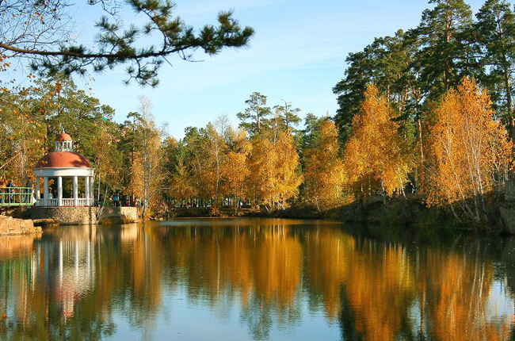
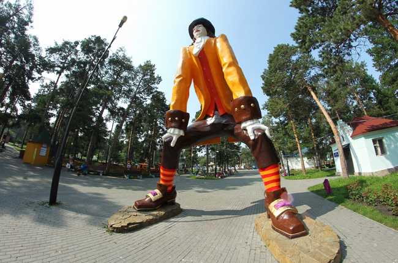
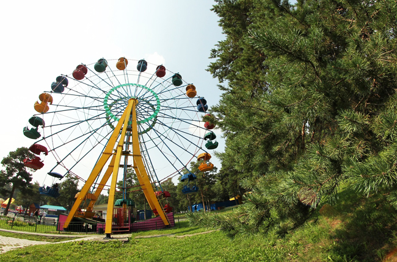

Парк культуры и отдыха им. Ю. Гагарина
ЦПКиО им. Ю. А. Гагарина образован в 1936 в лесопарковой зоне Челябинска. Занимает площадь 1200 га.
Собственно зона отдыха парка занимает территорию 80 га. На ней 20 водоемов, 8 га цветников и клумб, фонтан, работает малая детская Южно-Уральская железная дорога протяженностью 5 км. Посетители могут отдохнуть в летнем кафе, посетить летний театр, танцплощадку, для детей создан городок аттракционов. На территории парка установлена мемориальная плита в честь первых маевок 1906–08.
В апреле 1961 решением горкома КПСС ЦПКиО как лучшему городскому учреждению культуры было присвоено имя 1-го космонавта Ю. А. Гагарина. Последняя крупная реконструкция парка была закончена в 1986.
 Центральный парк отдыха им. Гагарина в Челябинске — одно из любимейших мест отдыха горожан. Расположен на территории соснового бора-легких города. Парк является памятником природы.